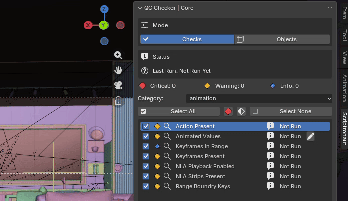
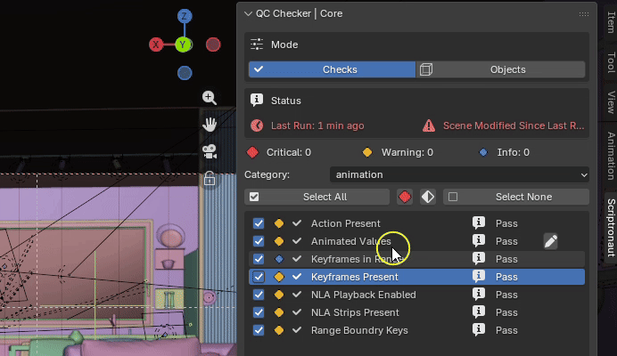
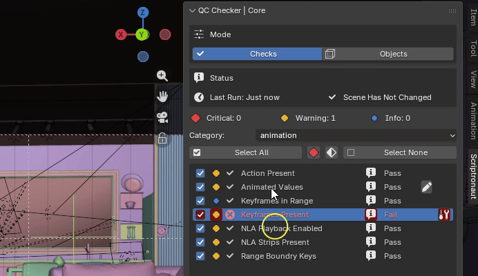

Welcome, to our beta tester page.

What is this
Find problems in your Blender scenes before they go further into production.
- Here's what we've built. Here's what it does.
- Here's what we're trying to accomplish.
- We're looking for Blender professionals to test it.
- Here's what you'll have to do. Here's what you get.

Run
Run the selected category checks to see if there are any issues that are found in your current scene that need attention.
Settings
Modify the exposed settings of a check to better suit your needs and run teh check again to get an updated idea of what is flagged.


Fix
Fix automatically fixes objects in your scene that have been flagged by the current check without having to manually do them one at a time.
Who we want
We're looking for Blender professionals who are willing to use the Qc Checker on real production scenes and help us identify problems, false positives, missing checks and workflow issues.
Beta status
The core QC system has already undergone extensive internal testing. We're now looking for a small group of Blender professionals to test the tool in real-world workflows before public release.
Current limitations
- Blender 4.3 and up is supported.
- Certain checks are still being refined.
- Some results may require confirmation.